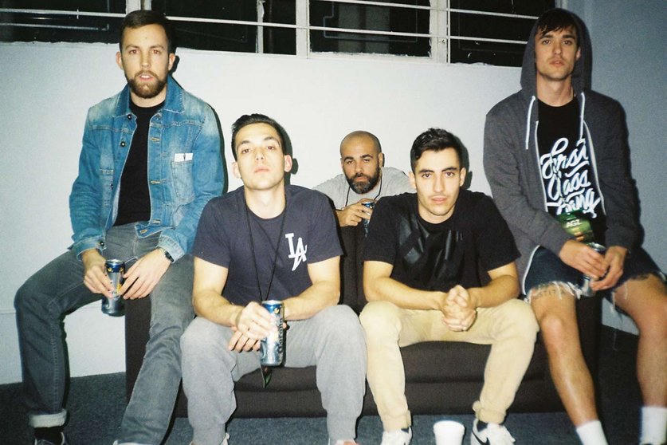
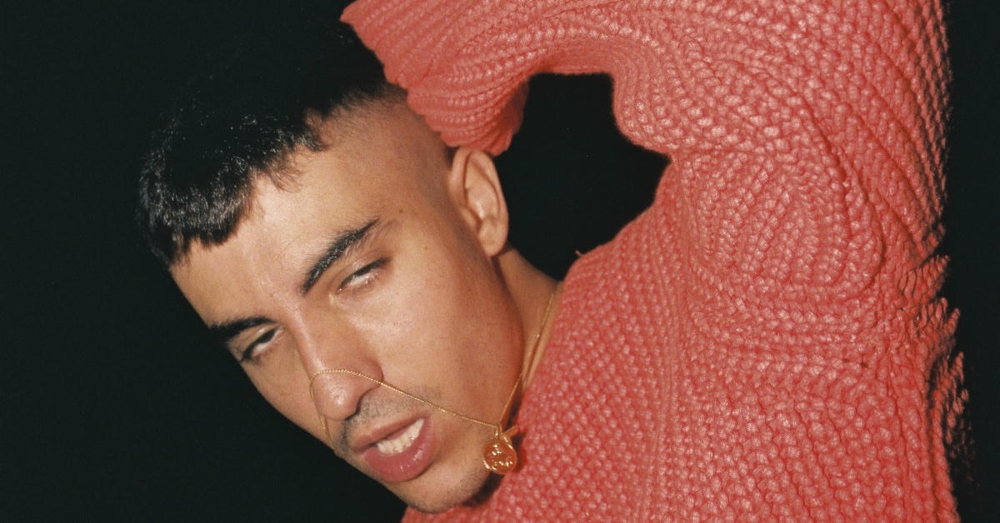
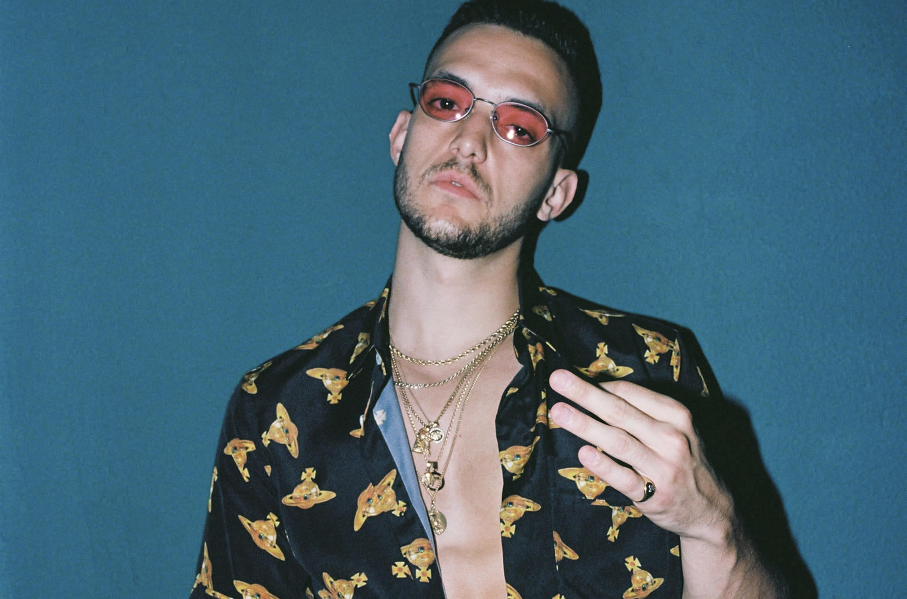
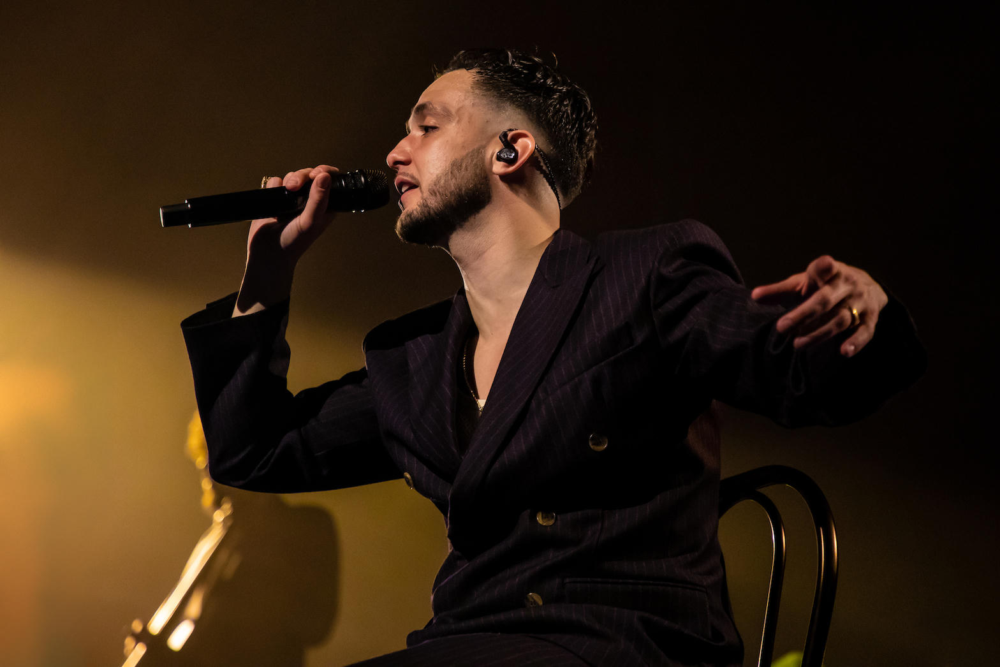

Fotos del colectivo y de sus dos caras más conocidas: C. Tangana y Sticky M.A.

El grupo.
Foto de Agorazein de la época de Siempre. Los cinco juntos, en casa, con la estética de entonces: chándal, camisetas y el rollo de colectivo de barrio, no de estrella en solitario.

Sticky M.A.
Antes Manto. En Siempre lleva temas propios como To Pue' Ser, Ángel y Guadalupe, y comparte casi todo el disco con C. Tangana.

C. Tangana.
Antón Álvarez, antes Crema. La C del nombre viene de ese alias. Es la cara más visible de AGZ y quien después se hizo famoso en solitario.

En directo.
C. Tangana con el micro. El colectivo cerró etapa tras Siempre (2016) y la gira de 2017. En 2026 vuelven juntos al Movistar Arena de Madrid.